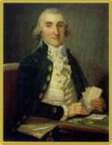

Beaubien-Perrault-Benington - Person Sheet
Beaubien-Perrault-Benington - Person Sheet

NameEustache Ignace Trottier Desrivières
Birth1760
FatherEustache Trottier Desrivières (1727-)
MotherMarguerite Mailhiot (1735-)
Spouses
Birth8 Feb 1763, Varennes, Québec20
Death20 Oct 1793, Varennes, Québec20
FatherFrancois-Augustin Bailly De Messein (1709-1771)
MotherM. Anne des Goutins (-1804)
Marriage1796567